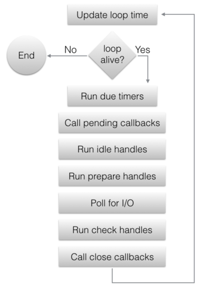

This is part 4 of a series of posts on writing concurrent network servers. In this part we're going to use libuv to rewrite our server once again, and also talk about handling time-consuming tasks in callbacks using a thread pool. Finally, we're going to look under the hood of libuv for a bit to study how it wraps blocking file-system operations with an asynchronous API.
All posts in the series:
- Part 1 - Introduction
- Part 2 - Threads
- Part 3 - Event-driven
- Part 4 - libuv
- Part 5 - Redis case study
- Part 6 - Callbacks, Promises and async/await
Abstracting away event-driven loops with libuv
In part 3, we've seen how similar select-based and epoll-based servers are, and I mentioned it's very tempting to abstract away the minor differences between them. Numerous libraries are already doing this, however, so in this part I'm going to pick one and use it. The library I'm picking is libuv, which was originally designed to serve as the underlying portable platform layer for Node.js, and has since found use in additional projects. libuv is written in C, which makes it highly portable and very suitable for tying into high-level languages like JavaScript and Python.
While libuv has grown to be a fairly large framework for abstracting low-level platform details, it remains centered on the concept of an event loop. In our event-driven servers in part 3, the event loop was explicit in the main function; when using libuv, the loop is usually hidden inside the library itself, and user code just registers event handlers (as callback functions) and runs the loop. Furthermore, libuv will use the fastest event loop implementation for a given platform: for Linux this is epoll, etc.
libuv supports multiple event loops, and thus an event loop is a first class citizen within the library; it has a handle - uv_loop_t, and functions for creating/destroying/starting/stopping loops. That said, I will only use the "default" loop in this post, which libuv makes available via uv_default_loop(); multiple loops are mosly useful for multi-threaded event-driven servers, a more advanced topic I'll leave for future parts in the series.
A concurrent server using libuv
To get a better feel for libuv, let's jump to our trusty protocol server that we've been vigorously reimplementing throughout the series. The structure of this server is going to be somewhat similar to the select and epoll-based servers of part 3, since it also relies on callbacks. The full code sample is here; we start with setting up the server socket bound to a local port:
int portnum = 9090;
if (argc >= 2) {
portnum = atoi(argv[1]);
}
printf("Serving on port %d\n", portnum);
int rc;
uv_tcp_t server_stream;
if ((rc = uv_tcp_init(uv_default_loop(), &server_stream)) < 0) {
die("uv_tcp_init failed: %s", uv_strerror(rc));
}
struct sockaddr_in server_address;
if ((rc = uv_ip4_addr("0.0.0.0", portnum, &server_address)) < 0) {
die("uv_ip4_addr failed: %s", uv_strerror(rc));
}
if ((rc = uv_tcp_bind(&server_stream, (const struct sockaddr*)&server_address, 0)) < 0) {
die("uv_tcp_bind failed: %s", uv_strerror(rc));
}
Fairly standard socket fare here, except that it's all wrapped in libuv APIs. In return we get a portable interface that should work on any platform libuv supports.
This code also demonstrates conscientious error handling; most libuv functions return an integer status, with a negative number meaning an error. In our server we treat these errors as fatals, but one may imagine a more graceful recovery.
Now that the socket is bound, it's time to listen on it. Here we run into our first callback registration:
// Listen on the socket for new peers to connect. When a new peer connects,
// the on_peer_connected callback will be invoked.
if ((rc = uv_listen((uv_stream_t*)&server_stream, N_BACKLOG, on_peer_connected)) < 0) {
die("uv_listen failed: %s", uv_strerror(rc));
}
uv_listen registers a callback that the event loop will invoke when new peers connect to the socket. Our callback here is called on_peer_connected, and we'll examine it soon.
Finally, main runs the libuv loop until it's stopped (uv_run only returns when the loop has stopped or some error occurred).
// Run the libuv event loop.
uv_run(uv_default_loop(), UV_RUN_DEFAULT);
// If uv_run returned, close the default loop before exiting.
return uv_loop_close(uv_default_loop());
Note that only a single callback was registered by main prior to running the event loop; we'll soon see how additional callbacks are added. It's not a problem to add and remove callbacks throughout the runtime of the event loop - in fact, this is how most servers are expected to be written.
This is on_peer_connected, which handles new client connections to the server:
void on_peer_connected(uv_stream_t* server_stream, int status) {
if (status < 0) {
fprintf(stderr, "Peer connection error: %s\n", uv_strerror(status));
return;
}
// client will represent this peer; it's allocated on the heap and only
// released when the client disconnects. The client holds a pointer to
// peer_state_t in its data field; this peer state tracks the protocol state
// with this client throughout interaction.
uv_tcp_t* client = (uv_tcp_t*)xmalloc(sizeof(*client));
int rc;
if ((rc = uv_tcp_init(uv_default_loop(), client)) < 0) {
die("uv_tcp_init failed: %s", uv_strerror(rc));
}
client->data = NULL;
if (uv_accept(server_stream, (uv_stream_t*)client) == 0) {
struct sockaddr_storage peername;
int namelen = sizeof(peername);
if ((rc = uv_tcp_getpeername(client, (struct sockaddr*)&peername,
&namelen)) < 0) {
die("uv_tcp_getpeername failed: %s", uv_strerror(rc));
}
report_peer_connected((const struct sockaddr_in*)&peername, namelen);
// Initialize the peer state for a new client: we start by sending the peer
// the initial '*' ack.
peer_state_t* peerstate = (peer_state_t*)xmalloc(sizeof(*peerstate));
peerstate->state = INITIAL_ACK;
peerstate->sendbuf[0] = '*';
peerstate->sendbuf_end = 1;
peerstate->client = client;
client->data = peerstate;
// Enqueue the write request to send the ack; when it's done,
// on_wrote_init_ack will be called. The peer state is passed to the write
// request via the data pointer; the write request does not own this peer
// state - it's owned by the client handle.
uv_buf_t writebuf = uv_buf_init(peerstate->sendbuf, peerstate->sendbuf_end);
uv_write_t* req = (uv_write_t*)xmalloc(sizeof(*req));
req->data = peerstate;
if ((rc = uv_write(req, (uv_stream_t*)client, &writebuf, 1,
on_wrote_init_ack)) < 0) {
die("uv_write failed: %s", uv_strerror(rc));
}
} else {
uv_close((uv_handle_t*)client, on_client_closed);
}
}
This code is well commented, but there are a couple of important libuv idioms I'd like to highlight:
- Passing custom data into callbacks: since C has no closures, this can be challenging. libuv has a void* data field in all its handle types; these fields can be used to pass user data. For example, note how client->data is made to point to a peer_state_t structure so that the callbacks registered by uv_write and uv_read_start can know which peer data they're dealing with.
- Memory management: event-driven programming is much easier in languages with garbage collection, because callbacks usually run in a completely different stack frame from where they were registered, making stack-based memory management difficult. It's almost always necessary to pass heap-allocated data to libuv callbacks (except in main, which remains alive on the stack when all callbacks run), and to avoid leaks much care is required about when these data are safe to free(). This is something that comes with a bit of practice [1].
The peer state for this server is:
typedef struct {
ProcessingState state;
char sendbuf[SENDBUF_SIZE];
int sendbuf_end;
uv_tcp_t* client;
} peer_state_t;
It's fairly similar to the state in part 3; we no longer need sendptr, since uv_write will make sure to send the whole buffer it's given before invoking the "done writing" callback. We also keep a pointer to the client for other callbacks to use. Here's on_wrote_init_ack:
void on_wrote_init_ack(uv_write_t* req, int status) {
if (status) {
die("Write error: %s\n", uv_strerror(status));
}
peer_state_t* peerstate = (peer_state_t*)req->data;
// Flip the peer state to WAIT_FOR_MSG, and start listening for incoming data
// from this peer.
peerstate->state = WAIT_FOR_MSG;
peerstate->sendbuf_end = 0;
int rc;
if ((rc = uv_read_start((uv_stream_t*)peerstate->client, on_alloc_buffer,
on_peer_read)) < 0) {
die("uv_read_start failed: %s", uv_strerror(rc));
}
// Note: the write request doesn't own the peer state, hence we only free the
// request itself, not the state.
free(req);
}
Then we know for sure that the initial '*' was sent to the peer, we start listening to incoming data from this peer by calling uv_read_start, which registers a callback (on_peer_read) that will be invoked by the event loop whenever new data is received on the socket from the client:
void on_peer_read(uv_stream_t* client, ssize_t nread, const uv_buf_t* buf) {
if (nread < 0) {
if (nread != uv_eof) {
fprintf(stderr, "read error: %s\n", uv_strerror(nread));
}
uv_close((uv_handle_t*)client, on_client_closed);
} else if (nread == 0) {
// from the documentation of uv_read_cb: nread might be 0, which does not
// indicate an error or eof. this is equivalent to eagain or ewouldblock
// under read(2).
} else {
// nread > 0
assert(buf->len >= nread);
peer_state_t* peerstate = (peer_state_t*)client->data;
if (peerstate->state == initial_ack) {
// if the initial ack hasn't been sent for some reason, ignore whatever
// the client sends in.
free(buf->base);
return;
}
// run the protocol state machine.
for (int i = 0; i < nread; ++i) {
switch (peerstate->state) {
case initial_ack:
assert(0 && "can't reach here");
break;
case wait_for_msg:
if (buf->base[i] == '^') {
peerstate->state = in_msg;
}
break;
case in_msg:
if (buf->base[i] == '$') {
peerstate->state = wait_for_msg;
} else {
assert(peerstate->sendbuf_end < sendbuf_size);
peerstate->sendbuf[peerstate->sendbuf_end++] = buf->base[i] + 1;
}
break;
}
}
if (peerstate->sendbuf_end > 0) {
// we have data to send. the write buffer will point to the buffer stored
// in the peer state for this client.
uv_buf_t writebuf =
uv_buf_init(peerstate->sendbuf, peerstate->sendbuf_end);
uv_write_t* writereq = (uv_write_t*)xmalloc(sizeof(*writereq));
writereq->data = peerstate;
int rc;
if ((rc = uv_write(writereq, (uv_stream_t*)client, &writebuf, 1,
on_wrote_buf)) < 0) {
die("uv_write failed: %s", uv_strerror(rc));
}
}
}
free(buf->base);
}
The runtime behavior of this server is very similar to the event-driven servers of part 3: all clients are handled concurrently in a single thread. Also similarly, a certain discipline has to be maintained in the server's code: the server's logic is implemented as an ensemble of callbacks, and long-running operations are a big no-no since they block the event loop. Let's explore this issue a bit further.
Long-running operations in event-driven loops
The single-threaded nature of event-driven code makes it very susceptible to a common issue: long-running code blocks the entire loop. Consider this program:
void on_timer(uv_timer_t* timer) {
uint64_t timestamp = uv_hrtime();
printf("on_timer [%" PRIu64 " ms]\n", (timestamp / 1000000) % 100000);
// "Work"
if (random() % 5 == 0) {
printf("Sleeping...\n");
sleep(3);
}
}
int main(int argc, const char** argv) {
uv_timer_t timer;
uv_timer_init(uv_default_loop(), &timer);
uv_timer_start(&timer, on_timer, 0, 1000);
return uv_run(uv_default_loop(), UV_RUN_DEFAULT);
}
It runs a libuv event loop with a single registered callback: on_timer, which is invoked by the loop every second. The callback reports a timestamp, and once in a while simulates some long-running task by sleeping for 3 seconds. Here's a sample run:
$ ./uv-timer-sleep-demo
on_timer [4840 ms]
on_timer [5842 ms]
on_timer [6843 ms]
on_timer [7844 ms]
Sleeping...
on_timer [11845 ms]
on_timer [12846 ms]
Sleeping...
on_timer [16847 ms]
on_timer [17849 ms]
on_timer [18850 ms]
...
on_timer dutifully fires every second, until the random sleep hits in. At that point, on_timer is not invoked again until the sleep is over; in fact, no other callbacks will be invoked in this time frame. The sleep call blocks the current thread, which is the only thread involved and is also the thread the event loop uses. When this thread is blocked, the event loop is blocked.
This example demonstrates why it's so important for callbacks to never block in event-driven calls, and applies equally to Node.js servers, client-side Javascript, most GUI programming frameworks, and many other asynchronous programming models.
But sometimes running time-consuming tasks is unavoidable. Not all tasks have asynchronous APIs; for example, we may be dealing with some library that only has a synchronous API, or just have to perform a potentially long computation. How can we combine such code with event-driven programming? Threads to the rescue!
Threads for "converting" blocking calls into asynchronous calls
A thread pool can be used to turn blocking calls into asynchronous calls, by running alongside the event loop and posting events onto it when tasks are completed. Here's how it works, for a given blocking function do_work():
- Instead of directly calling do_work() in a callback, we package it into a "task" and ask the thread pool to execute the task. We also register a callback for the loop to invoke when the task has finished; let's call it on_work_done().
- At this point our callback can return and the event loop keeps spinning; at the same time, a thread in the pool is executing the task.
- Once the task has finished executing, the main thread (the one running the event loop) is notified and on_work_done() is invoked by the event loop.
Let's see how this solves our previous timer/sleep example, using libuv's work scheduling API:
void on_after_work(uv_work_t* req, int status) {
free(req);
}
void on_work(uv_work_t* req) {
// "Work"
if (random() % 5 == 0) {
printf("Sleeping...\n");
sleep(3);
}
}
void on_timer(uv_timer_t* timer) {
uint64_t timestamp = uv_hrtime();
printf("on_timer [%" PRIu64 " ms]\n", (timestamp / 1000000) % 100000);
uv_work_t* work_req = (uv_work_t*)malloc(sizeof(*work_req));
uv_queue_work(uv_default_loop(), work_req, on_work, on_after_work);
}
int main(int argc, const char** argv) {
uv_timer_t timer;
uv_timer_init(uv_default_loop(), &timer);
uv_timer_start(&timer, on_timer, 0, 1000);
return uv_run(uv_default_loop(), UV_RUN_DEFAULT);
}
Instead of calling sleep directly in on_timer, we enqueue a task, represented by a handle of type work_req [2], the function to run in the task (on_work) and the function to invoke once the task is completed (on_after_work). on_work is where the "work" (the blocking/time-consuming operation) happens. Note a crucial difference between the two callbacks passed into uv_queue_work: on_work runs in the thread pool, while on_after_work runs on the main thread which also runs the event loop - just like any other callback.
Let's see this version run:
$ ./uv-timer-work-demo
on_timer [89571 ms]
on_timer [90572 ms]
on_timer [91573 ms]
on_timer [92575 ms]
Sleeping...
on_timer [93576 ms]
on_timer [94577 ms]
Sleeping...
on_timer [95577 ms]
on_timer [96578 ms]
on_timer [97578 ms]
...
The timer ticks every second, even though the sleeping function is still invoked; sleeping is now done on a separate thread and doesn't block the event loop.
A primality-testing server, with exercises
Since sleep isn't a very exciting way to simulate work, I've prepared a more comprehensive example - a server that accepts numbers from clients over a socket, checks whether these numbers are prime and sends back either "prime" or "composite". The full code for this server is here - I won't post it here since it's long, but will rather give readers the opportunity to explore it on their own with a couple of exercises.
The server deliberatly uses a naive primality test algorithm, so for large primes it can take quite a while to return an answer. On my machine it takes ~5 seconds to compute the answer for 2305843009213693951, but YMMV.
Exercise 1: the server has a setting (via an environment variable named MODE) to either run the primality test in the socket callback (meaning on the main thread) or in the libuv work queue. Play with this setting to observe the server's behavior when multiple clients are connecting simultaneously. In blocking mode, the server will not answer other clients while it's computing a big task; in non-blocking mode it will.
Exercise 2: libuv has a default thread-pool size, and it can be configured via an environment variable. Can you use multiple clients to discover experimentally what the default size is? Having found the default thread-pool size, play with different settings to see how it affects the server's responsiveness under heavy load.
Non-blocking file-system operations using work queues
Delegating potentially-blocking operations to a thread pool isn't good for just silly demos and CPU-intensive computations; libuv itself makes heavy use of this capability in its file-system APIs. This way, libuv accomplishes the superpower of exposing the file-system with an asynchronous API, in a portable way.
Let's take uv_fs_read(), for example. This function reads from a file (represented by a uv_fs_t handle) into a buffer [3], and invokes a callback when the reading is completed. That is, uv_fs_read() always returns immediately, even if the file sits on an NFS-like system and it may take a while for the data to get to the buffer. In other words, this API is asynchronous in the way other libuv APIs are. How does this work?
At this point we're going to look under the hood of libuv; the internals are actually fairly straightforward, and it's a good exercise. Being a portable library, libuv has different implementations of many of its functions for Windows and Unix systems. We're going to be looking at src/unix/fs.c in the libuv source tree.
The code for uv_fs_read is:
int uv_fs_read(uv_loop_t* loop, uv_fs_t* req,
uv_file file,
const uv_buf_t bufs[],
unsigned int nbufs,
int64_t off,
uv_fs_cb cb) {
if (bufs == NULL || nbufs == 0)
return -EINVAL;
INIT(READ);
req->file = file;
req->nbufs = nbufs;
req->bufs = req->bufsml;
if (nbufs > ARRAY_SIZE(req->bufsml))
req->bufs = uv__malloc(nbufs * sizeof(*bufs));
if (req->bufs == NULL) {
if (cb != NULL)
uv__req_unregister(loop, req);
return -ENOMEM;
}
memcpy(req->bufs, bufs, nbufs * sizeof(*bufs));
req->off = off;
POST;
}
It may seem puzzling at first, because it defers the real work to the INIT and POST macros, with some local variable setup for POST. This is done to avoid too much code duplication within the file.
The INIT macro is:
#define INIT(subtype) \
do { \
req->type = UV_FS; \
if (cb != NULL) \
uv__req_init(loop, req, UV_FS); \
req->fs_type = UV_FS_ ## subtype; \
req->result = 0; \
req->ptr = NULL; \
req->loop = loop; \
req->path = NULL; \
req->new_path = NULL; \
req->cb = cb; \
} \
while (0)
It sets up the request, and most importantly sets the req->fs_type field to the actual FS request type. Since uv_fs_read invokes INIT(READ), it means req->fs_type gets assigned the constant UV_FS_READ.
The POST macro is:
#define POST \
do { \
if (cb != NULL) { \
uv__work_submit(loop, &req->work_req, uv__fs_work, uv__fs_done); \
return 0; \
} \
else { \
uv__fs_work(&req->work_req); \
return req->result; \
} \
} \
while (0)
What it does depends on whether the callback is NULL. In libuv file-system APIs, a NULL callback means we actually want to perform the operation synchronously. In this case POST invokes uv__fs_work directly (we'll get to what this function does in just a bit), whereas for a non-NULL callback, it submits uv__fs_work as a work item to the work queue (which is the thread pool), and registers uv__fs_done as the callback; that function does a bit of book-keeping and invokes the user-provided callback.
If we look at the code of uv__fs_work, we'll see it uses more macros to route work to the actual file-system call as needed. In our case, for UV_FS_READ the call will be made to uv__fs_read, which (at last!) does the reading using regular POSIX APIs. This function can be safely implemented in a blocking manner, since it's placed on a thread-pool when called through the asynchronous API.
In Node.js, the fs.readFile function is mapped to uv_fs_read. Thus, reading files can be done in a non-blocking fashion even though the underlying file-system API is blocking.
| [1] | To ensure that this server doesn't leak memory, I ran it under Valgrind with the leak checker enabled. Since servers are often designed to run forever, this was a bit challenging; to overcome this issue I've added a "kill switch" to the server - a special sequence received from a client makes it stop the event loop and exit. The code for this is in the on_wrote_buf handler. |
| [2] | Here we don't use work_req for much; the primality testing server discussed next will show how it's used to pass context information into the callback. |
| [3] | uv_fs_read() provides a generalized API similar to the preadv Linux system call: it takes multiple buffers which it fills in order, and supports an offset into the file. We can ignore these features for the sake of our discussion. |